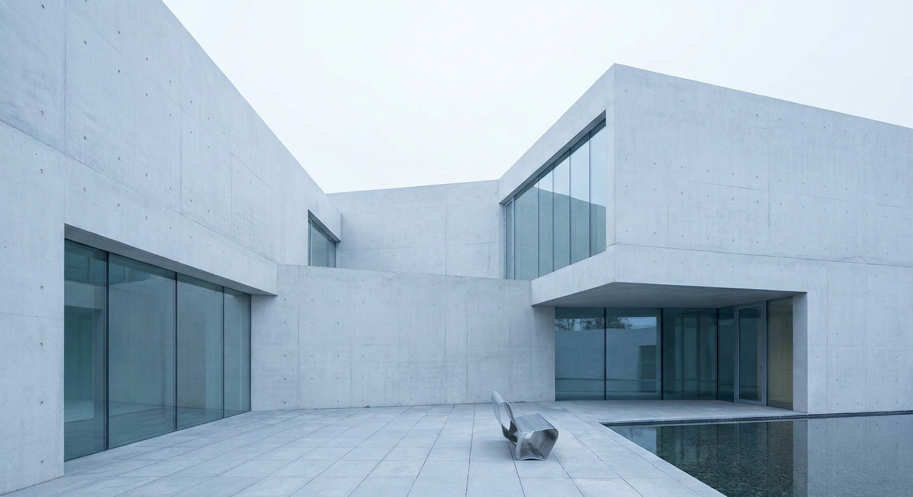
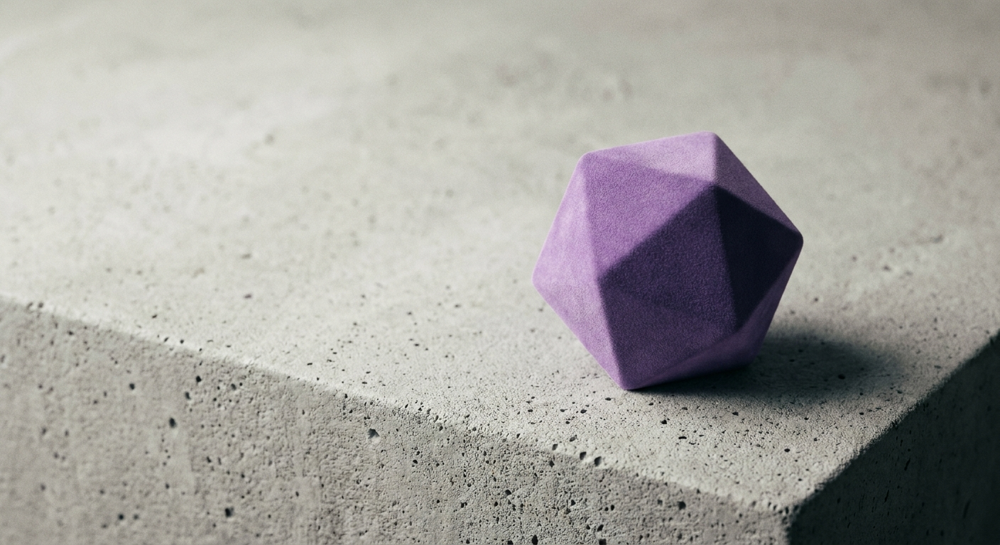
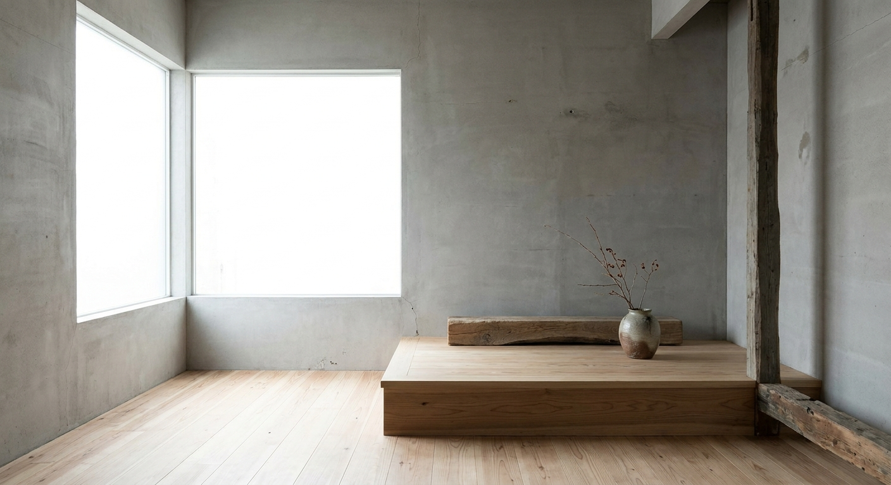

Look & Feel.
Clarity as a visual experience. Things coming into focus, seen through a new lens.
The Visual Thesis.
The FP visual system treats clarity as the primary design material. Sharp edges, extreme whitespace, light surfaces. Not SaaS dashboard. Not portfolio site. Editorial dossier. The reference aesthetic is a physical document you would leave on a boardroom table.

White and light backgrounds as the default surface. Content breathes. Density is the enemy of clarity. The constraint creates the quality.
Dark surfaces only as inverted accent sections, never the default canvas. Used sparingly to create contrast and hierarchy.
Color.
One accent. Six neutrals. The purple carries all brand energy. Everything else stays quiet. No warm colors, ever. The constraint is the point.

Typography.
Two typefaces. One for impact, one for information. Bricolage Grotesque carries the personality at 800 weight. Poppins handles everything else with quiet legibility. No third typeface, ever. Mono-style labels use Poppins with wide letter-spacing.
Letter-spacing: -0.02em
Line-height: 1.05
Use: Headlines, titles, logo mark, pull quotes
Line-height: 1.7
Use: Body text, labels, navigation, UI
Photography.
Two modes. Personal mode when Florian is in the frame: natural light, warm color, full color inside the bracket. Subject mode for concepts and objects: industrial minimalism, matte textures, studio directional lighting.
Available light, warm color temperature. Full color inside bracket. Outfits rotate between strategist, speaker, and thinker modes.
Matte textures, concrete, marble, stone. Studio directional lighting. Japanese clean minimalism with slight organic warmth.
Three out of four images use #5A5CF9 as selective color accent within the subject. One in four stays fully neutral.
AI-generated for both modes. Consistent lighting direction, color grading, surface language. Same photographer feel across all images.

Spacing.
Generous spacing between sections. Content breathes. Density is the enemy of clarity. Three tokens control the entire layout system.
Motion.
Three easing curves. Each serves a specific purpose. Motion is restrained and purposeful. Grain overlay at 0.03 opacity on all surfaces prevents the digital from feeling sterile.
Subtle noise overlay on all surfaces. Adds analog warmth to the digital precision. Barely visible, always present.
Forbidden.
Non-negotiable constraints. These rules exist to maintain visual coherence across every touchpoint. If something is on this list, it does not appear in FP work. No exceptions.
Zero border-radius everywhere. No rounded buttons, no pill shapes, no soft containers. The sharp edge is the signature.
Reds, oranges, yellows are permanently excluded. Cool palette only. This is architectural, not decorative.
Display type is always 800 weight. No thin, light, or regular weights for headlines or titles.
Two families only. Bricolage Grotesque and Poppins. Mono-style uses Poppins at wide letter-spacing.
No italic on headlines or display text. Emphasis uses weight, color, or size shift only.
Light-forward brand. Dark sections are accent only, never the primary surface.